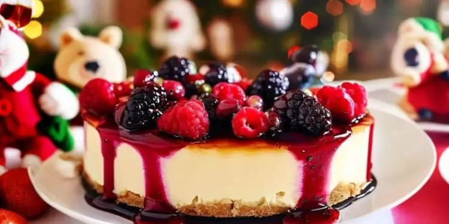

Já pensou você saboreando pratos deliciosos? Hoje vamos te mostrar como agradar o paladar da realeza
Acompanhe conosco:

200 g de biscoito maisena
100 g de manteiga derretida
600 g de cream cheese
1 lata de leite condensado
4 ovos
1 colher de chá de essência de baunilha
300 g de frutas vermelhas (morango, framboesa, amora, etc.)
1/4 de xícara de açúcar
2 colheres de sopa de suco de limão
1 colher de sopa de amido de milho
Modo de Preparo:
Triture os biscoitos no liquidificador ou no processador até formar uma farofa. Transfira para uma tigela e misture com a manteiga derretida. Forre o fundo e as laterais de uma forma de fundo removível com essa massa e leve ao forno preaquecido a 180°C por 10 minutos. Reserve.
No liquidificador ou na batedeira, bata o cream cheese, o leite condensado, os ovos e a essência de baunilha até obter um creme homogêneo. Despeje sobre a massa assada e leve ao forno novamente por 40 minutos ou até que o recheio esteja firme.
Em uma panela, leve ao fogo baixo as frutas vermelhas, o açúcar, o suco de limão e o amido de milho, mexendo sempre, até formar uma geleia. Deixe esfriar um pouco e espalhe sobre o cheesecake. Leve à geladeira por pelo menos 4 horas antes de desenformar e servir.